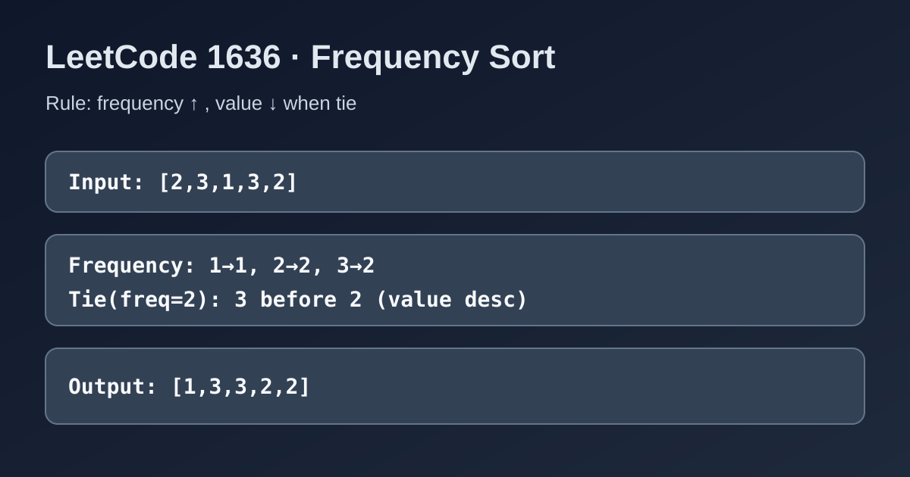

LeetCode 1636: Sort Array by Increasing Frequency (Frequency Asc, Value Desc Tie-Break)
LeetCode 1636Hash TableCustom SortingToday we solve LeetCode 1636 - Sort Array by Increasing Frequency.
Source: https://leetcode.com/problems/sort-array-by-increasing-frequency/

English
Problem Summary
Given an integer array, sort numbers by increasing frequency. If two numbers have the same frequency, put the larger number first.
Key Insight
This is a two-key sorting problem: primary key is frequency ascending, secondary key is value descending. Build a frequency map first, then sort with a custom comparator based on these two keys.
Algorithm
1) Count each number's frequency with a hash map.
2) Convert array to sortable form (or sort in-place where supported).
3) Comparator logic:
- if freq[a] != freq[b], smaller frequency comes first;
- otherwise, larger value comes first.
4) Return the sorted result.
Complexity Analysis
Time: O(n log n) due to sorting.
Space: O(n) for the frequency map (and boxed array depending on language).
Common Pitfalls
- Wrong tie-break direction: equal frequency must be sorted by value descending.
- Recomputing frequency inside comparator repeatedly without caching map lookups carefully.
- Using unstable custom comparator logic that violates transitivity.
Reference Implementations (Java / Go / C++ / Python / JavaScript)
class Solution {
public int[] frequencySort(int[] nums) {
Map<Integer, Integer> freq = new HashMap<>();
for (int x : nums) freq.put(x, freq.getOrDefault(x, 0) + 1);
Integer[] arr = new Integer[nums.length];
for (int i = 0; i < nums.length; i++) arr[i] = nums[i];
Arrays.sort(arr, (a, b) -> {
int fa = freq.get(a), fb = freq.get(b);
if (fa != fb) return fa - fb; // frequency asc
return b - a; // value desc
});
for (int i = 0; i < nums.length; i++) nums[i] = arr[i];
return nums;
}
}func frequencySort(nums []int) []int {
freq := map[int]int{}
for _, x := range nums {
freq[x]++
}
sort.Slice(nums, func(i, j int) bool {
a, b := nums[i], nums[j]
if freq[a] != freq[b] {
return freq[a] < freq[b] // frequency asc
}
return a > b // value desc
})
return nums
}class Solution {
public:
vector<int> frequencySort(vector<int>& nums) {
unordered_map<int, int> freq;
for (int x : nums) freq[x]++;
sort(nums.begin(), nums.end(), [&](int a, int b) {
if (freq[a] != freq[b]) return freq[a] < freq[b]; // frequency asc
return a > b; // value desc
});
return nums;
}
};class Solution:
def frequencySort(self, nums: List[int]) -> List[int]:
freq = Counter(nums)
nums.sort(key=lambda x: (freq[x], -x))
return nums/**
* @param {number[]} nums
* @return {number[]}
*/
var frequencySort = function(nums) {
const freq = new Map();
for (const x of nums) {
freq.set(x, (freq.get(x) || 0) + 1);
}
nums.sort((a, b) => {
const fa = freq.get(a), fb = freq.get(b);
if (fa !== fb) return fa - fb; // frequency asc
return b - a; // value desc
});
return nums;
};中文
题目概述
给定整数数组 nums，需要按“出现频率升序”排序；若两个数频率相同，则数值更大的排在前面。
核心思路
这是一个“二级排序”问题：第一关键字是频率升序，第二关键字是数值降序。先用哈希表统计频率，再按比较器排序即可。
算法步骤
1）遍历数组，统计每个数字出现次数。
2）对数组排序，比较规则如下：
- 若 freq[a] != freq[b]，频率小的在前；
- 否则值大的在前。
3）返回排序后的数组。
复杂度分析
时间复杂度：O(n log n)（排序主导）。
空间复杂度：O(n)（频率哈希表）。
常见陷阱
- 频率相同情况下写成升序，导致答案反了。
- 在比较器里反复做昂贵操作，影响常数性能。
- 比较器条件不完整，可能造成不稳定或错误排序结果。
多语言参考实现（Java / Go / C++ / Python / JavaScript）
class Solution {
public int[] frequencySort(int[] nums) {
Map<Integer, Integer> freq = new HashMap<>();
for (int x : nums) freq.put(x, freq.getOrDefault(x, 0) + 1);
Integer[] arr = new Integer[nums.length];
for (int i = 0; i < nums.length; i++) arr[i] = nums[i];
Arrays.sort(arr, (a, b) -> {
int fa = freq.get(a), fb = freq.get(b);
if (fa != fb) return fa - fb;
return b - a;
});
for (int i = 0; i < nums.length; i++) nums[i] = arr[i];
return nums;
}
}func frequencySort(nums []int) []int {
freq := map[int]int{}
for _, x := range nums {
freq[x]++
}
sort.Slice(nums, func(i, j int) bool {
a, b := nums[i], nums[j]
if freq[a] != freq[b] {
return freq[a] < freq[b]
}
return a > b
})
return nums
}class Solution {
public:
vector<int> frequencySort(vector<int>& nums) {
unordered_map<int, int> freq;
for (int x : nums) freq[x]++;
sort(nums.begin(), nums.end(), [&](int a, int b) {
if (freq[a] != freq[b]) return freq[a] < freq[b];
return a > b;
});
return nums;
}
};class Solution:
def frequencySort(self, nums: List[int]) -> List[int]:
freq = Counter(nums)
nums.sort(key=lambda x: (freq[x], -x))
return nums/**
* @param {number[]} nums
* @return {number[]}
*/
var frequencySort = function(nums) {
const freq = new Map();
for (const x of nums) {
freq.set(x, (freq.get(x) || 0) + 1);
}
nums.sort((a, b) => {
const fa = freq.get(a), fb = freq.get(b);
if (fa !== fb) return fa - fb;
return b - a;
});
return nums;
};
Comments